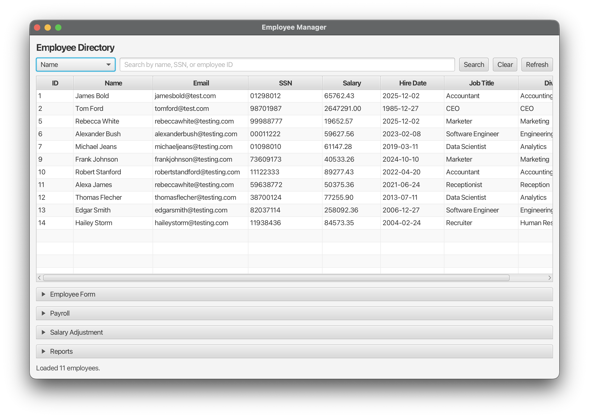
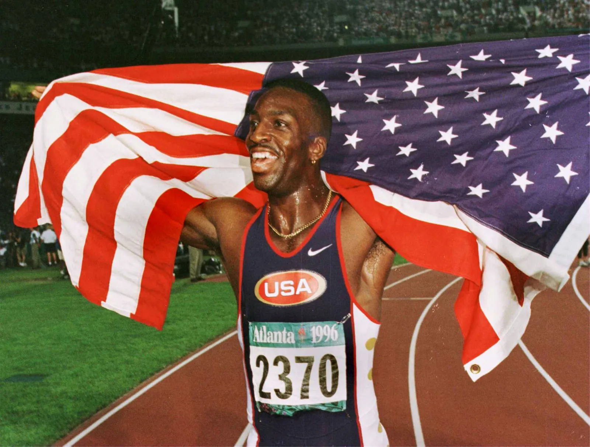

My Projects
My portfolio is a reflection of my dual interests in technology and the arts.
These highlights are a mix of projects I’ve worked on throughout my time as a Computer Science student, ranging from software development to creative photography.
Some projects began as academic assignments, while others are personal ideas I’ve continued to refine outside the classroom.
Many of these projects are still evolving, and this page serves as a snapshot of that process.
Employee Management System

This project is an employee management system designed to manage employee records and generate reports.
Users can search for employees by SSN, name, or employee ID, and perform core operations such as adding, updating, and deleting records.
The system also supports bulk salary updates using customizable filters.
Built with Java, Spring Boot, JavaFX, and JDBC, with a MySQL backend, the application emphasizes reliability, usability, and efficient data handling.
The project was developed over the course of a month.
GitHub Repository
Osaka Nightclub

While not particularly impressive in any technical sense, this remains one of my favorite photos I've taken.
I shot it during a night out in Osaka at a nightclub, and I still have no idea who the person in the frame is.
What I love is the energy it captures, carefree, suave, and alive in a way that feels true to the city’s nightlife.
That night, I was out with my friends, moving between the dance floor and the crowd.
Throughout the night, people would randomly come up and start dancing with us.
As I was taking photos of my friends, this guy suddenly stepped into the frame and started dancing directly in front of the lens.
I snapped the photo instinctively, and it ended up capturing the exact moment and vibe of the night.
Track and Field Web Game

This project is still in development.
It is a web-based game that simulates track and field events, allowing users to compete in various athletic challenges.
The game aims to provide an engaging and interactive experience for sports fans.
I drew inspiration from Basketball-GM, as well as my own interest in track and field.
I initially started this project in 2021, using Java as the main programming language.
However, I have since transitioned to using web technologies to make the game more accessible, utilizing Python, Flask, SQLite, HTML, and CSS.